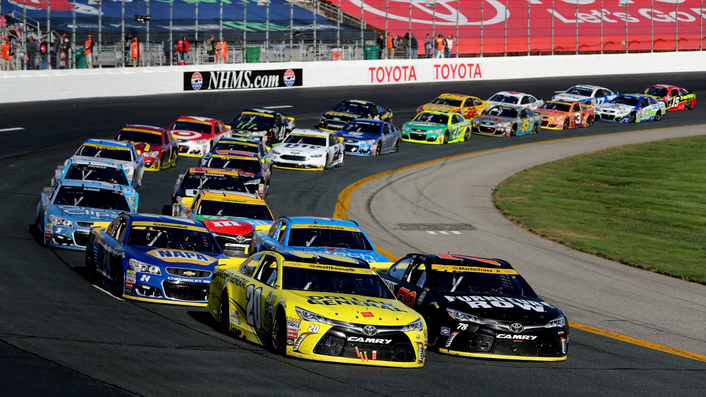
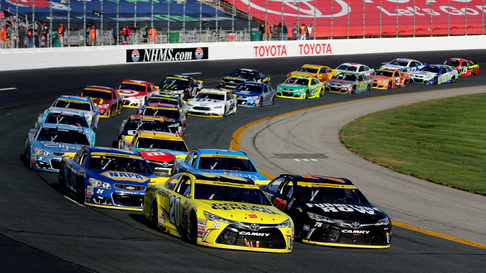

Formula One is the highest class of single-seater auto racing sanctioned by the Fédération Internationale de l'Automobile (FIA) and owned by the Formula One Group. The FIA Formula One World Championship has been one of the premier forms of racing around the world since its inaugural season in 1950. The word "formula" in the name refers to the set of rules to which all participants' cars must conform. A Formula One season consists of a series of races, known as Grands Prix , which take place worldwide on purpose-built circuits and on public roads.

 

The National Association for Stock Car Auto Racing (NASCAR) is an American auto racing sanctioning and operating company that is best known for stock-car racing. Its three largest or National series are the Monster Energy NASCAR Cup Series, the Xfinity Series, and the Gander Outdoors Truck Series. Regional series include the NASCAR K&N Pro Series East and West, the Whelen Modified Tour, NASCAR Pinty's Series, NASCAR Whelen Euro Series, and NASCAR PEAK Mexico Series. NASCAR sanctions over 1,500 races at over 100 tracks in 48 US states as well as in Canada, Mexico, and Europe. NASCAR has presented races at the Suzuka and Motegi circuits in Japan, and the Calder Park Thunderdome in Australia. NASCAR also ventures into eSports via the PEAK Antifreeze NASCAR iRacing Series and a sanctioned ladder system on that title.


The World Rally Championship (WRC) is a rallying series organised by the FIA, culminating with a champion driver, co-driver and manufacturer. The driver's world championship and manufacturer's world championship are separate championships, but based on the same point system. The series currently consists of 14 three-day events driven on surfaces ranging from gravel and tarmac to snow and ice. Each rally is split into 15–25 special stages which are run against the clock on closed roads.